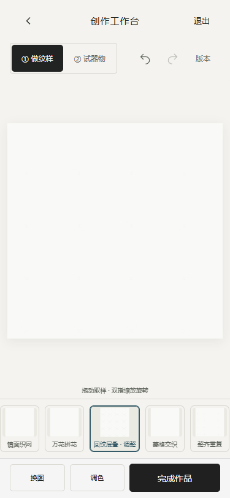
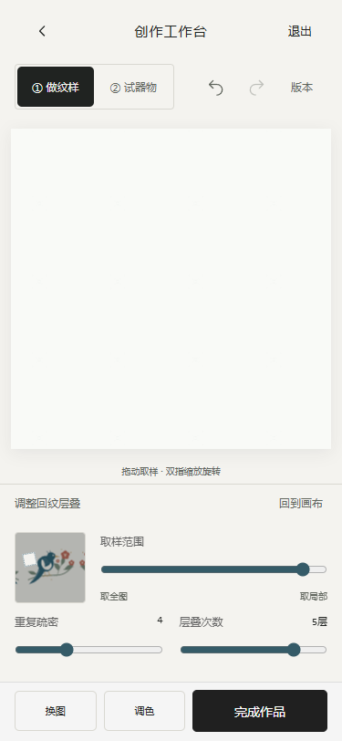

手机版工作台流程优化
2026-10-30 · 已本地实现和测试，没有部署。
打开工作台。已有草稿如仍停在器物视图，点「变纹样」。新草稿默认从纹样大画布开始。
流程
保留原样或点「试试拼花」 → 横向选样式 → 直接拖动画布 / 双指放大素材细节 → 存快照 → 看器物、切换杯盘碗盆 → 完成并保存。
- 大画布直接改变素材取样，手势过程中出现取样位置小地图。双指还可转动取样；「调整位置」明确切换为整幅图案摆放，两类操作独立。
- 默认不占用画布空间展示四器型选择，进入「看器物」后展示。原模型、相机、独立器型摆放和返回保留。
- 取样与参数按需打开，回纹新增 1–6 层、30–90% 层间比例。参数真实参与图案生成，并保存在草稿、快照和完成作品的纹样版本。
- 重复纹样在主画布按比例铺满可视区域，单幅仍完整显示。导出仍采用原完整画布尺寸，屏幕预览裁切不改导出内容。
- 保留现有配色和数据结构，已有作品不迁移或覆盖。
375px 截图


实际变更文件
- prototype/workbench.js、workbench.css：纹样大画布手势、小地图、按需参数、入口与手机布局。
- prototype/editor-object.js：变纹样/看器物入口及默认视图。
- prototype/pattern-texture.js：可调层叠、取样旋转和画布显示方式。
- prototype/app.js：编辑预览使用一致的显示方式。
- prototype/model.js、foundation.js、editor-model.js、work-result.js：层数/比例、历史、默认值和作品纹样版本。
- tests/workbench.test.cjs；scripts/qa-pattern-flow.cjs、qa-symmetry-pixels.cjs；既有手势与工作台回归脚本调整入口。
- index.html、物之再生-H5-单文件.html：重新构建的本地单文件产物；本报告、截图与测试结果。
已执行验证
- npm test：91/91；npm run lint、npm run build 通过。
- qa-pattern-flow.cjs 在源码入口与构建后的单文件入口执行：默认大画布、拖动/双指、取消、撤销重做、参数、快照、刷新恢复、四器型切换、完成保存和作品参数均通过。
- 320/375/390/430px：主画布与参数展开布局、保存按钮位置及无横向溢出检查通过。
- qa-symmetry-pixels.cjs：真实 PNG 像素检查包括新增层数和比例，不同参数得到不同图像；重复单元边缘和文件缺失报错检查通过。
- qa-mobile-focus.cjs、qa-workbench.cjs：器物旋转缩放、独立摆放、取样、配色、版本、SVG/PNG 导出和返回回归通过。
测试使用 Edge headless 手机模拟与 CDP 触摸事件，未做物理手机、Safari 或微信验收。开发服务检查时发现停止，已在 8879 重新启动。
参考与未完成范围
本轮采用前一轮对 Repper 手机版的实操调研：大画布直接取样、底部横向样式、少量工具与快照。没有复制其素材或源码，也不宣称功能等同。任意效果链、Metamorphosis 整幅渐变形、更多非方格几何仍未实现；没有接入 AI、云共享或正式馆藏资源。器物仍为程序化示意。
本轮交互结果 · 像素结果 · 手势回归